DASER
Editor schema baza de date
Autori
- Madalina Jitaru Student @Faculty of computer science
- Marian Alexandru Daniel Student @Faculty of computer science
- Alexandru Bodnar Student @Faculty of computer science
Cuprins - How to use
- Create table
- Alter table
- Foreign key
- Delete table
- Export SVG
- Export SQL
- Import SQL
- Info
1. Create table
a. Pop-up pentru create table
Utilizatorul poate sa creeze tabele prin mai multe metode, iar una dintre acestea este prin a accesa butonul de create table, care deschide un pop-up special pentru "create table", unde poate selecta numele tabelului, numele coloanei, datatype pentru fiecare coloana in parte si nu il ultimul valoare pentru datatype.Ultimul rand, anume "Datatype value" se refera la faptul ca daca utilizatorul alege ca si datatype int sau varchar trebuie sa ii dea valoarea exacta si anume 0-255.
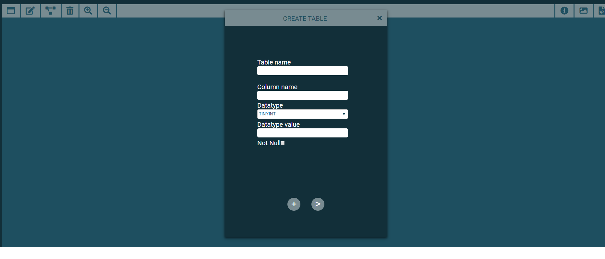Daca utilizatorul doreste sa adauge mai mult coloane pentru un singur tabel, trebuie sa accesze butonul de "+" si pop-up se mareste si ii ofera posibilitatea de a da scroll si de a adauga mai multe coloare dupa cum se observa in imaginea urmatoare:
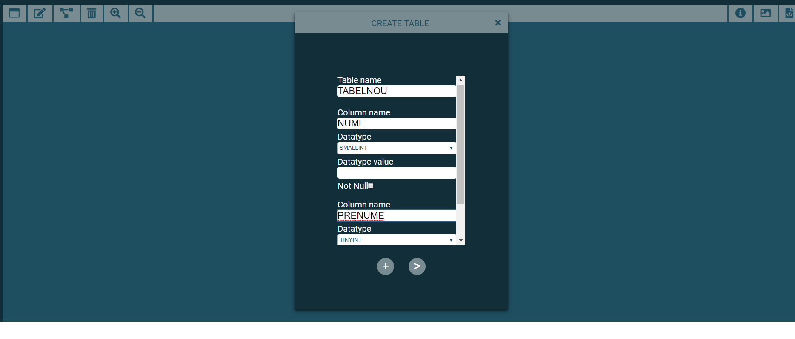Dupa completarea coloanelor, utilizatorul apasa butonul '>' si ii apare tabelul creat daca acesta nu exista deja in DOM, in caz contrar ii apare un alert cu mesasjul "tabel name already exists".
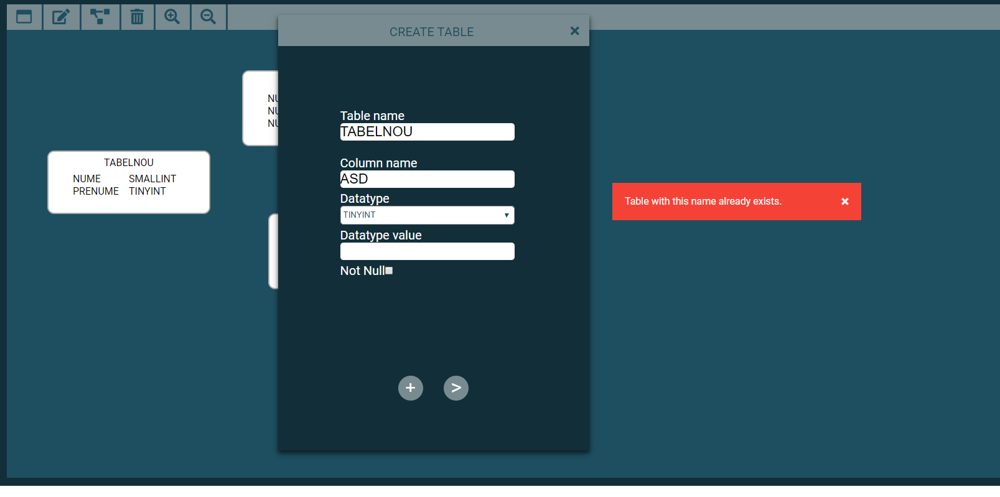b. SQL command input
De asemenea utilizatorul poate crea un tabel cu aceleasi functionalitati si restrictii ca mai sus, folosind command input dupa cum arata imaginea urmatoare:
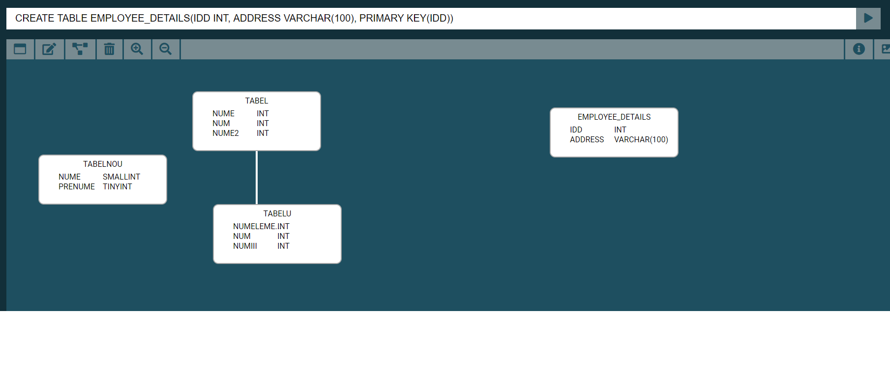2. Alter table
Pop-up pentru alter table
Utilizatorul poate sa modifice un tabel deja existent in DOM prin accesarea butonului de "alter table" care deschide un pop-up unde se poate modifica atat date vizibile despre tabel precum nume coloana cat si date logice precum cheile primare si/sau chei straine, dupa cum arata imaginea urmatoare:
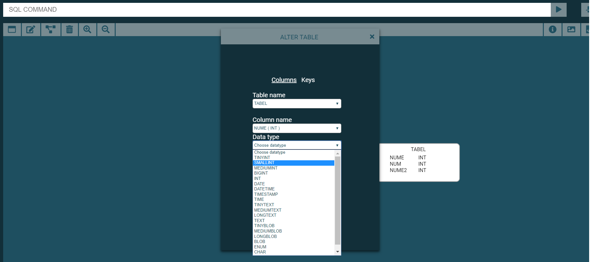Daca utilizatorul doreste sa modifice cheile primare sau straine trebuie sa acceseze zona de "key" si sa completeze urmatoarele campuri dupa cum arata in figura urmatoare:
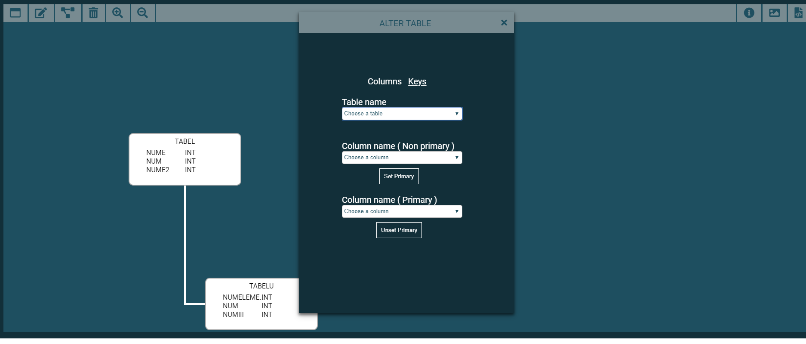Dupa completarea coloanelor, utilizatorul apasa butonul 'submit' si ii apare tabelul modificat.De exemplu pentru tabelul "tabel" coloana nume doresc sa ii modific datatype din int in tinyint.
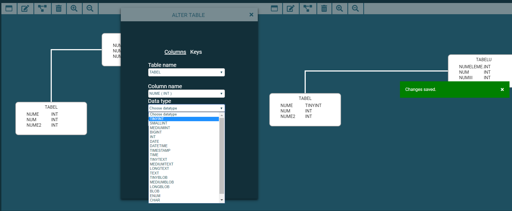3. Foreign key
Pop-up pentru foreign key
Utilizatorul poate crea chei straine cu tabelele existe(generate logic) prin accesare butonului de "create foreign key" care deschide un pop-up de tipul urmator:
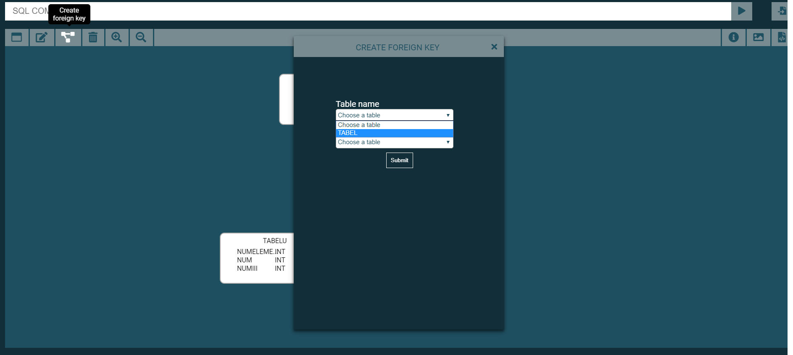4. Delete table
a. Pop-up pentru delete table
Utilizatorul poate sa sterge tabele prin mai multe metode, iar una dintre acestea este prin a accesa butonul de delete table, care deschide un pop-up special pentru "delete table", unde poate selecta numele tabelului.
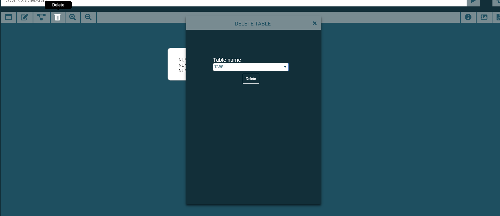Daca tabelul selectat are ca referinta alt tabel, exista un alert unde avertizeaza utilizatorul ca si tabelul referentiat se va sterge daca va accesa 'confirm', in cazul in care apasa 'Cancel' revine la pasul initial de a selecta tabelul dorit pentru stergere.
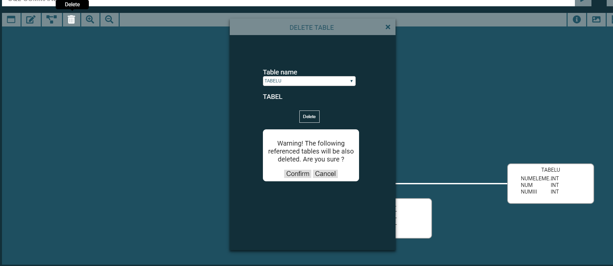b. SQL command input
De asemenea utilizatorul poate sterge un tabel cu aceleasi functionalitati si restrictii ca mai sus, folosind command input dupa cum arata imaginea urmatoare:
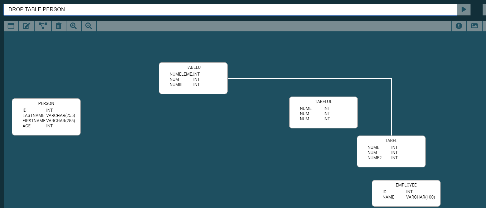 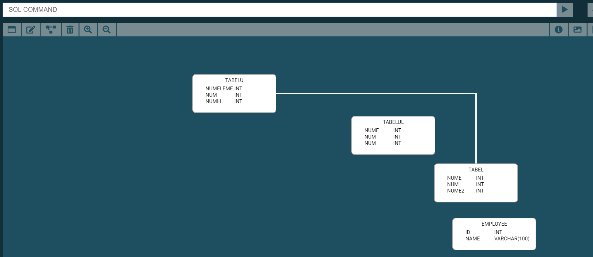5. Export SVG
Utilizatorul poate sa exporta schema bazei de date in format SVG prin accesarea butonului de "export SVG":
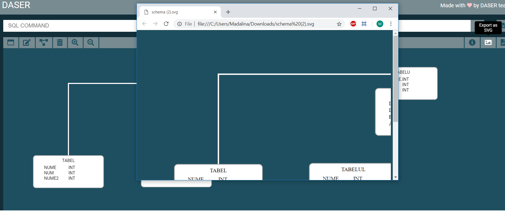6. Export SQL commands
Utilizatorul poate sa exporta comenziile schemei bazei de date prin accesarea butonului de "export sql commands":
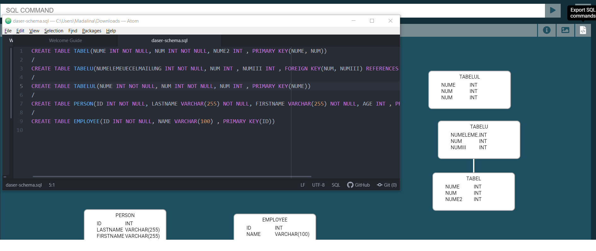7. Import SQL commands
Utilizatorul poate sa importe comenziile sql pentru a creea schema bazei de date aferenta prin accesarea butonului de "import sql commands":
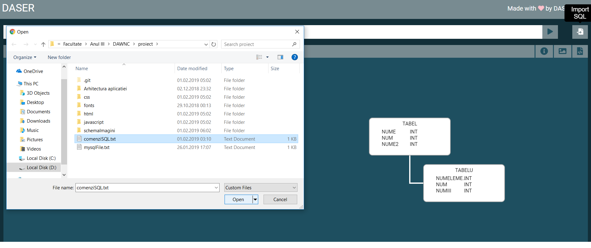 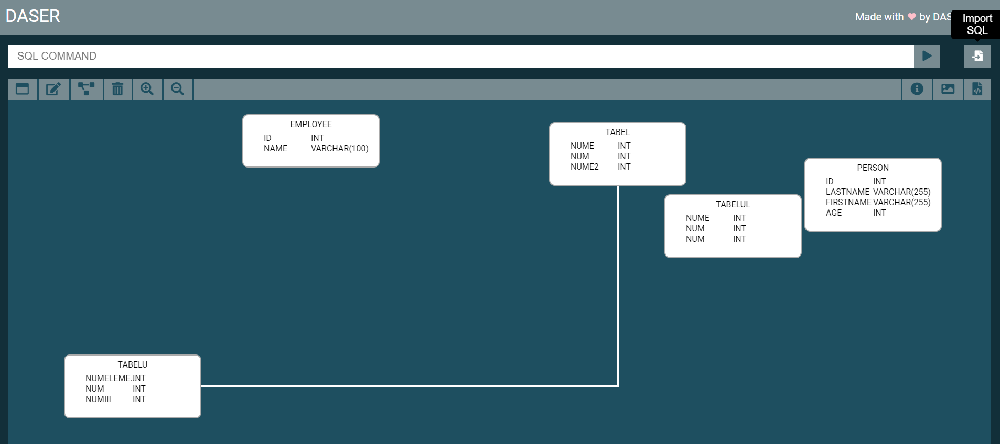